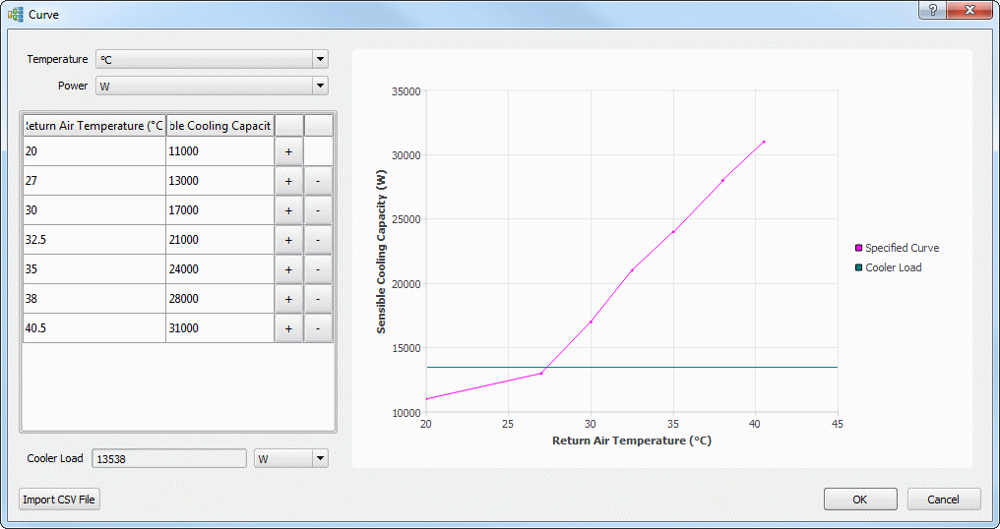

A cooler capacity
curve can be defined either by importing a CSV file or adding points
interactively. Such data is available from manufacturers.
Procedure
- Click the Capacity Curve Click
to Edit button.
The Capacity Curve dialog box
is opened.
- Select the desired units for
Temperature Unit and Power Unit.
- Depending on the how you want
to create the capacity curve, choose one of the following methods.
If you want to...
|
Do
the following:
|
|---|
Enter data manually.
|
Enter a pair of values for Return Air Temperature
and Sensible Cooling Capacity.
Click the + button to add another row in
the table and enter another pair of values.
Continue adding data in this way.
The chart is updated as you enter data.
You can delete rows by clicking the - button.
|
Enter data by CSV file
import.
|
Click Import CSV File.
Navigate to, and select, a valid CSV file and
click Open.
|
- Click OK to
save the data and close the Capacity Curve dialog box.
Results
After importing from a CSV file, the
capacity curve is plotted using the values from the file.
If the cooler capacity is insufficient
to achieve the specified set point, the relevant (supply or return)
temperature “floats” as required. For example, if the cooler has
insufficient capacity to meet a specified supply temperature, the
actual supply temperature will be warmer such that the rate of heat
extraction from the air will be equal to the maximum cooler capacity
at the current return temperature.
On completion of the solution, the
Capacity Curve dialog box is updated to show the operating point
for the cooler unit as the Cooler Load value and, if possible, as
a line on the curve, see Figure 1.
Figure 1. Capacity Curve Showing
Operating Point